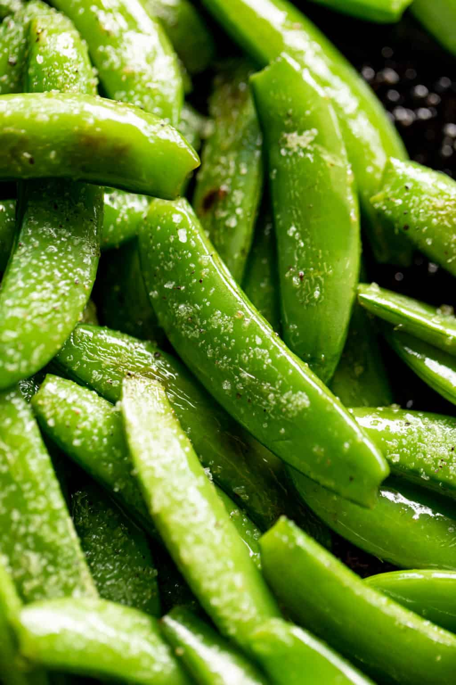

sugar snap peas

Description
When you start with a delicious, fresh green veggie like sugar snap peas, you really don’t need much more to improve it. That’s where this recipe comes in. Salty, buttery, a subtle kick of heat of you choose, cooked in 5 minutes!
Ingredients
- 2 teaspoons olive oil
- 2 teaspoons unsalted butter
- 1 lb. (500 g) fresh sugar snap peas, stem ends and string removed from each pod
- 1 teaspoon coarse salt, plus extra to serve
- 1/2 teaspoon black cracked pepper
- 1/8 teaspoon cayenne pepper, optional for some heat
Steps
- Heat oil and butter together in a large pan over medium-high heat. When butter has melted, add the snap peas, tossing them around in the pan to coat in the oil/butter mixture. Season with salt, pepper and cayenne (if using) and sauté for until the snap peas are crisp-tender, about 4-5 minutes
- Transfer to a serving bowl; season with extra coarse salt and pepper to serve.